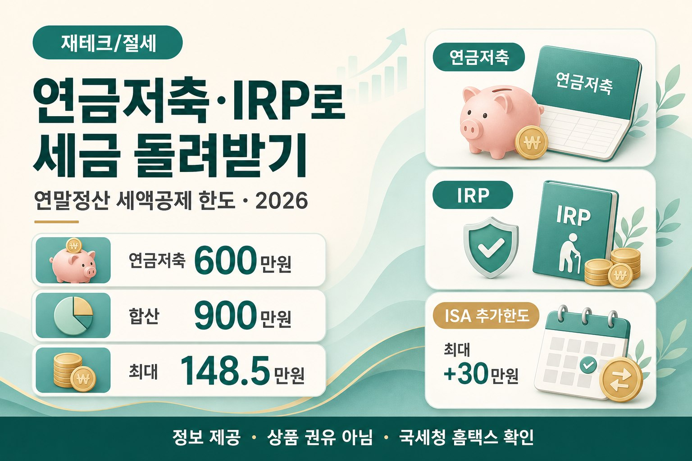

연금저축·IRP로 연말정산 세금 돌려받기 (2026 한도 총정리)
13월의 월급을 만드는 세액공제 한도·공제율·함정을 초보 눈높이로

연말이 다가오면 동료들 사이에서 꼭 나오는 말이 있습니다. “이번에도 13월의 월급 받을까?” 생산관리 월급쟁이인 저도 연말정산 시즌이면 같은 질문을 합니다. 오늘은 확정된 한도와 공제율만 가지고, 연금저축·IRP로 세금을 얼마나 돌려받을 수 있는지 초보 눈높이로 풀어 보겠습니다.
먼저 읽어주세요
본 글은 정보 제공이며 투자·금융상품 권유·세무 자문이 아닙니다. 개인별 소득·가입 이력·계좌 구성이 다르면 결과가 달라집니다. 정확한 한도·공제율은 국세청 홈택스(hometax.go.kr) 확인 필수입니다. 특정 증권사·은행·상품을 추천하지 않습니다. 결정은 본인 상황과 전문가 상담 후에 하세요.
- 연금저축 단독 한도 연 600만원, 연금저축+IRP 합산 공제 한도 900만원을 표로 정리합니다.
- 총급여 5,500만원 이하(또는 종합소득 4,500만원 이하) 16.5% / 초과 13.2% 공제율을 공식 기준으로 통일합니다.
- ISA 만기자금 연금계좌 전환의 “추가 한도” 개념과 중도해지 함정까지 확정 사실만 사용합니다.
1. 도입 — “13월의 월급”이 어디서 나오나
월급쟁이에게 연말정산은 한 해 동안 떼인 세금을 다시 맞추는 시간입니다. 많이 냈으면 돌려받고, 적게 냈으면 더 냅니다. 그중에서도 연금저축·IRP 납입은 “낸 돈의 일정 비율만큼 세금에서 깎아 주는” 세액공제라서 체감이 큽니다. 그래서 동료들이 “13월의 월급”이라고 부르곤 합니다.
다만 이름만 비슷해도 제도가 다릅니다. 연금저축은 개인이 노후 자금을 모으는 계좌이고, IRP(개인형퇴직연금)는 퇴직연금 틀 안에서 추가 납입이 가능한 계좌입니다. 둘 다 세액공제 대상이 될 수 있지만, 한도와 중도인출·투자 규제가 다릅니다. 오늘은 “얼마까지 넣으면 공제가 되는지, 내 소득이면 몇 퍼센트가 적용되는지”만 정리합니다. 정확한 한도·공제율은 국세청 홈택스(hometax.go.kr) 확인 필수입니다.
노후 현금흐름은 국민연금·주택연금과도 이어집니다. 수령 시기나 집 담보 연금이 궁금하시면 국민연금 조기수령 vs 연기수령 글을 정보로만 참고하시고, 오늘은 연말정산 세액공제 쪽만 보겠습니다.
2. 연금저축·IRP가 뭔지, 세액공제가 왜 센가
먼저 용어부터 짧게 잡겠습니다. 연금저축은 은행·증권·보험 등에서 가입하는 개인 연금 계좌입니다. IRP는 퇴직연금 계좌로, 이직·퇴직 때 퇴직금을 넣거나 본인이 추가로 납입할 수 있습니다. 둘 다 “노후에 연금처럼 받을 돈”을 모으는 틀이고, 연말정산에서는 납입액의 일부를 세액공제합니다.
여기서 중요한 구분이 있습니다. 소득공제와 세액공제입니다. 소득공제는 “과세표준을 줄이는” 방식입니다. 세율이 낮은 구간이면 절감액도 상대적으로 작아질 수 있습니다. 세액공제는 “계산된 세금에서 직접 깎는” 방식입니다. 연금저축·IRP는 세액공제라서, 공제율만 맞으면 납입액 × 공제율만큼 세금이 줄어드는 구조로 이해하기 쉽습니다. “무조건 최고”라고 말하지 않습니다. 다만 월급쟁이 연말정산에서 체감이 큰 이유 중 하나가 이 구조입니다.
소득공제
과세표준을 줄입니다. 세율 구간에 따라 절감액이 달라집니다.
세액공제
세금에서 직접 깎습니다. 연금저축·IRP는 이쪽입니다.
그래서 “넣기만 하면 무조건 이득”이 아닙니다. 한도를 넘는 납입은 공제가 안 되고, 중도에 깨면 예전에 받은 공제와 수익에 세금이 붙을 수 있습니다. 오늘은 그 뼈대만 정확히 잡겠습니다. 정확한 한도·공제율은 국세청 홈택스(hometax.go.kr) 확인 필수입니다.
3. 세액공제 한도 정리 — 600만, 합산 900만
숫자를 먼저 고정합니다. 연금저축만 보면 세액공제 한도는 연 600만원입니다. 600만원을 넘겨 더 넣을 수는 있지만, 그 초과분은 세액공제 대상이 아닙니다. “많이 넣었으니 공제도 더”가 아니라는 뜻입니다.
IRP에는 이 글의 확정 사실 기준으로 개별 한도가 따로 없습니다. 대신 연금저축과 합산해 총 900만원까지 공제됩니다. 가장 많이 공제를 채우는 조합은 연금저축 600만원 + IRP 300만원입니다. IRP만 900만원을 넣는 방식도 합산 한도 안에서는 가능하지만, “가장 많은 조합”으로 자주 이야기되는 그림이 600+300입니다. 정확한 한도·공제율은 국세청 홈택스(hometax.go.kr) 확인 필수입니다.
| 구분 | 세액공제 한도 | 한 줄 기억 |
|---|---|---|
| 연금저축 단독 | 연 600만원 | 초과 납입 가능, 공제는 600만까지만 |
| 연금저축 + IRP 합산 | 총 900만원 | IRP 개별 한도 없음 · 합산 900만 |
| 많이 채우는 조합 예시 | 연금저축 600 + IRP 300 | 합산 900만 맞춤 |
※ 정확한 한도·공제율은 국세청 홈택스(hometax.go.kr) 확인 필수.
회사에서 넣는 퇴직연금(확정기여형 등)과 개인이 넣는 IRP 추가 납입을 섞어 생각하면 헷갈립니다. 연말정산 서류에 “연금저축” “퇴직연금” 항목이 나뉘어 나오는 이유가 여기 있습니다. 본인 납입 증명원·홈택스 미리보기로 “공제 대상 금액”이 얼마인지 먼저 확인하세요. 제가 대신 찍지 않습니다.
4. 내 소득이면 얼마 돌려받나
공제율은 소득 구간에 따라 둘로 나뉩니다. 총급여 5,500만원 이하(또는 종합소득금액 4,500만원 이하)이면 지방소득세 포함 체감률 16.5%입니다. 그 구간을 넘으면 13.2%입니다. “총급여”와 “종합소득” 중 어느 쪽을 보느냐는 근로소득자·사업소득자 등 상황에 따라 달라질 수 있으니, 내 원천징수영수증·종합소득 신고 기준으로 홈택스에서 확인하세요. 정확한 한도·공제율은 국세청 홈택스(hometax.go.kr) 확인 필수입니다.
| 소득 구간 | 공제율(지방소득세 포함) | 합산 900만 기준 최대 |
|---|---|---|
| 총급여 5,500만 이하 (또는 종합소득 4,500만 이하) |
16.5% | 900만 × 16.5% = 148.5만원 |
| 위 구간 초과 | 13.2% | 900만 × 13.2% = 118.8만원 |
※ 정확한 한도·공제율은 국세청 홈택스(hometax.go.kr) 확인 필수. 위 금액은 한도를 꽉 채웠을 때의 산술 예시입니다.
계산 예시 — 예시일 뿐, 내 환급액이 아닙니다
이해를 돕는 가상 예시입니다. 총급여가 5,500만원 이하인 분이 연금저축 600만원 + IRP 300만원 = 900만원을 공제 대상 납입했다고 가정하면, 900만원 × 16.5% = 148.5만원입니다. 같은 900만원이라도 소득 구간이 초과면 900만원 × 13.2% = 118.8만원입니다. 연금저축만 600만원 넣은 경우라면, 5,500만 이하 구간에서 600만 × 16.5% = 99만원입니다. 이 숫자는 다른 공제·기납부세액과 합쳐져 실제 환급·추가납부가 결정됩니다. “148만원이 통장에 무조건 들어온다”고 단정하지 마세요. 정확한 한도·공제율은 국세청 홈택스(hometax.go.kr) 확인 필수입니다.
세후 월급 감을 먼저 적어 두면, “올해 연금 납입을 얼마나 더 할지” 대화가 구체가 됩니다. 아직 월급이 있다면 연봉·실수령액 계산기로 감을 잡아 보세요. 연말정산 환급액 자체는 계산하지 않습니다. 홈택스·원천징수 의무자 안내가 정본입니다.
5. 연금저축 vs IRP — 뭘 먼저?
“둘 중 뭐가 좋아요?”라는 질문에 저는 상품을 찍지 않습니다. 대신 차이만 표로 보겠습니다. 이 글의 확정 사실 기준으로, 연금저축은 투자 자유도가 상대적으로 높고 일부 중도인출이 가능합니다. IRP는 위험자산 70% 한도가 있고, 중도인출이 거의 어렵습니다. 규제 대신 합산 한도 안에서 추가 절세 공간을 만드는 쪽에 가깝습니다. 정확한 한도·공제율은 국세청 홈택스(hometax.go.kr) 확인 필수입니다.
| 항목 | 연금저축 | IRP |
|---|---|---|
| 세액공제 한도 | 단독 연 600만원 | 개별 한도 없음 · 합산 900만까지 |
| 투자·운용 | 투자 자유도 상대적으로 높음 | 위험자산 70% 한도 |
| 중도인출 | 일부 중도인출 가능 | 중도인출 거의 불가 |
| 한 줄 감각 | 유연성 + 600만 한도 | 규제 대신 추가 절세(합산) |
※ 상품·운용사별 세부 조건은 다릅니다. 정확한 한도·공제율은 국세청 홈택스(hometax.go.kr) 확인 필수.
절세 순서만 정리하면 이 글의 확정 사실은 다음과 같습니다. ① 연금저축 600만원 → ② IRP 300만원(합산 900만원) → ③ ISA 활용. “반드시 이 순서만 하라”는 권유가 아닙니다. 한도를 어떻게 채우는지 이해할 때의 뼈대입니다. 유동성이 중요하면 중도인출이 상대적으로 열려 있는 쪽을 먼저 공부하는 분이 있고, 합산 한도를 꽉 채우고 싶으면 IRP 추가 납입을 같이 보는 분이 있습니다. 선택은 본인 사정입니다.
6. ISA로 한 단계 더 절세하는 법
ISA(개인종합자산관리계좌) 만기자금을 연금계좌로 옮기면, 전환액의 10%(최대 300만원)를 추가 납입한도로 인정받을 수 있습니다. 핵심은 이겁니다. 전환 자체에 새로운 공제율이 붙는 게 아니라, “추가로 넣을 수 있는 한도”가 생기는 개념입니다. 그 추가 한도(최대 300만원)에 기존과 같은 세액공제율(16.5% 또는 13.2%)이 적용되면, 최대 30만원 정도의 추가 공제 효과가 산술적으로 나옵니다. 정확한 한도·공제율은 국세청 홈택스(hometax.go.kr) 확인 필수입니다.
전환액이 충분히 커서 추가 한도 상한(최대 300만원)이 인정되고, 그 한도만큼 실제로 납입·공제 대상에 올랐다면, 이 글의 확정 사실 기준으로는 최대 30만원까지 추가 공제 효과가 생길 수 있습니다. “전환만 하면 자동으로 30만원이 들어온다”가 아닙니다. 추가 한도가 생기고, 그 한도 안에서 납입·공제가 이뤄져야 합니다. 세부 산정·요건은 홈택스·세무 상담으로 확인하세요. 정확한 한도·공제율은 국세청 홈택스(hometax.go.kr) 확인 필수입니다.
ISA 제도 자체(한도 이월·만기·생산적금융ISA 등)는 2026 세제개편 이슈와도 맞닿아 있습니다. 현행과 개편안을 섞지 말고, 2026 ISA 세제개편 글을 따로 읽어 보세요. ISA와 연금계좌 전환은 다른 절차입니다. 하나로 결론 내지 마세요.
절세 순서 한눈에
- ① 연금저축 600만원 한도부터 이해한다.
- ② IRP로 합산 900만원까지 채울지 검토한다(예: +300만).
- ③ ISA 만기자금 연금계좌 전환으로 추가 한도(전환액 10%, 최대 300만)가 생기는지 확인한다.
순서 안내는 이해를 돕기 위한 것이며, 특정 상품 가입 권유가 아닙니다. 정확한 한도·공제율은 국세청 홈택스(hometax.go.kr) 확인 필수입니다.
7. 조심할 함정 — 중도해지·연금수령·초과납입
첫 함정은 중도해지입니다. 그동안 받은 세액공제와 운용수익에 16.5% 기타소득세가 부과되면 실수령이 크게 줄어들 수 있습니다. “급해서 깼는데 생각보다 적게 나온다”는 이야기가 여기서 나옵니다. 다만 사망·해외이주·3개월 이상 요양 등 부득이한 사유가 인정되면 감면·면제가 가능할 수 있습니다. 사유·증빙은 국세청·금융회사 안내를 따르세요. 정확한 한도·공제율은 국세청 홈택스(hometax.go.kr) 확인 필수입니다.
둘째는 연금으로 받을 때의 과세입니다. 세액공제 받은 원금과 운용수익은 연금소득으로 지방소득세 포함 3.3~5.5% 저율 분리과세됩니다. “낼 때 공제받고, 받을 때 아예 세금이 없다”가 아닙니다. 다만 일반적인 근로소득 세율보다 낮은 구간으로 이해하면, 왜 장기 유지가 이야기되는지 감이 옵니다. 연령·수령 방식에 따라 달라질 수 있으니 단정하지 않습니다.
셋째는 초과납입입니다. 연금저축 600만원을 넘겨 넣어도 그 초과분은 세액공제가 안 됩니다. “올해 여유 있으니 왕창”이 공제 확대로 이어지지 않을 수 있습니다. 합산 900만 한도도 마찬가지로, 한도 밖은 공제 대상이 아닙니다.
중도해지 전에 확인할 것
해지·인출 전에 금융회사 예상 세금 안내와 홈택스 연말정산 이력을 같이 보세요. 과거에 공제받은 금액이 클수록, 중도해지 때 체감 손실이 커질 수 있습니다. 부득이한 사유에 해당하는지부터 확인하는 편이 안전합니다. 정확한 한도·공제율은 국세청 홈택스(hometax.go.kr) 확인 필수입니다.
노후 “받는 쪽” 설계와 “넣는 쪽” 절세는 다른 레이어입니다. 집을 담보로 현금흐름을 만드는 제도가 궁금하시면 주택연금 조건·수령액 글을 정보로만 참고하세요. 연금저축·IRP와 주택연금은 서로 다른 제도입니다.
8. 자주 묻는 질문
Q. 연금저축만 600만원 넣으면 최대 환급이 얼마인가요?
총급여 5,500만원 이하(또는 종합소득 4,500만원 이하) 구간이면 600만 × 16.5% = 99만원입니다.
합산 900만을 채우면 같은 구간에서 148.5만원입니다.
실제 환급은 다른 공제·기납부세액과 함께 결정됩니다.
정확한 한도·공제율은 국세청 홈택스(hometax.go.kr) 확인 필수입니다.
Q. IRP만 900만원 넣어도 되나요?
이 글의 확정 사실상 IRP 개별 한도는 없고, 연금저축과 합산해 총 900만원까지 공제됩니다.
IRP만으로 합산 한도를 채우는 구성도 가능합니다.
“가장 많은 조합”으로 자주 언급되는 그림은 연금저축 600 + IRP 300입니다.
본인 계좌·납입 증명으로 확인하세요.
Q. ISA 전환하면 공제율이 새로 붙나요?
아닙니다. 전환액의 10%(최대 300만원)가 추가 납입한도로 인정되는 개념입니다.
전환 자체에 별도 공제율이 새로 붙는 것이 아닙니다.
추가 한도 안에서의 공제 효과는 기존 세액공제율 체계와 함께 이해하세요.
최대 30만원 추가 공제라는 천장 감각은 이 글의 확정 사실입니다.
Q. 중도해지하면 정말 16.5%가 붙나요?
그동안 받은 세액공제와 운용수익에 16.5% 기타소득세가 부과될 수 있어 실수령이 줄 수 있습니다.
사망·해외이주·3개월 이상 요양 등 부득이한 사유는 감면·면제 가능성이 있습니다.
해당 여부는 국세청·금융회사 확인이 필요합니다.
9. 마무리 — 한도부터 확인하고, 상품은 나중에
정리하면 이렇습니다. 연금저축 세액공제 한도는 연 600만원이고, 초과 납입은 공제가 안 됩니다. IRP는 개별 한도 없이 연금저축과 합산 900만원까지 공제됩니다. 많이 채우는 조합 예시는 연금저축 600 + IRP 300입니다. 공제율은 총급여 5,500만원 이하(또는 종합소득 4,500만원 이하) 16.5%, 초과 13.2%입니다. 합산 900만 기준 최대는 148.5만원 / 118.8만원입니다. ISA 만기자금 연금계좌 전환은 전환액 10%(최대 300만) 추가 한도 → 최대 30만원 추가 공제 감각입니다. 중도해지 시 세액공제·운용수익에 16.5% 기타소득세가 붙을 수 있고, 연금 수령 시에는 3.3~5.5% 저율 분리과세입니다. 절세 순서 뼈대는 ① 연금저축 600 → ② IRP 300(합산 900) → ③ ISA입니다.
“얼마를 넣어야 한다”고 찍어 드리지 않습니다. 한도와 공제율부터 홈택스에서 확인하고, 중도해지·수령 과세까지 같이 보세요. 오늘 표가 가족·동료와 “올해 공제 칸을 어디까지 채울지” 이야기하는 출발점이 되길 바랍니다. 숫자는 국세청이 정본입니다.
📎 출처·참고

본 글은 정보 제공 목적이며 개인별 상황이 다르니 정확한 계산·상담은 국세청 홈택스(hometax.go.kr) 및 전문가에게 확인하세요. 재무·법률·투자 자문이 아니며 특정 금융상품·매수를 권하지 않습니다. 예시 금액은 이해를 돕기 위한 가정이며, 정확한 한도·공제율은 국세청 홈택스(hometax.go.kr) 확인이 필수입니다. 결정은 본인 상황·전문가 상담 후 하시기 바랍니다.